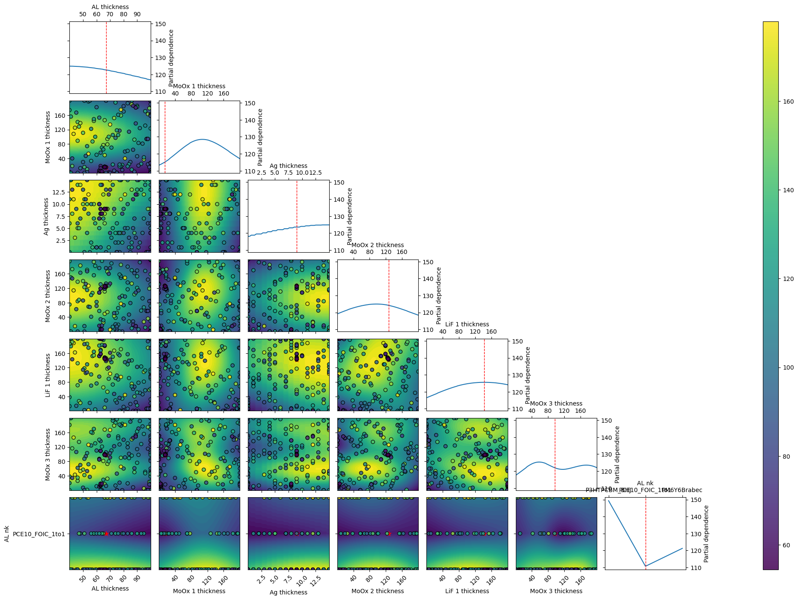

BOAR with Transfer Matrix Method
Version 1.0.0 (c) Vincent M. Le Corre, Larry Lueer, i-MEET 2021-2023
This notebook is made to use BOAR in combination with transfer matrix modeling (TMM) to optimize the thickness of the layers in a multilayer stack to optimize the light utilization efficiency (LUE) of a solar cell.
To perform the transfer matrix modeling we use a modified version of the open-source program devoloped by McGehee’s group (Stanford University) and adapted to python by Kamil Mielczarek (University of Texas).
For more information about the transfer matrix modeling, please refer to the original paper.
[1]:
# Activate matplotlib widgets
# %matplotlib inline
# comment the next line if you are on the jupyterhub server
# %matplotlib widget
# %matplotlib notebook
# Import libraries
import sys,os
import warnings
warnings.filterwarnings('ignore') # comment this out to see warnings
# Import boar
sys.path.append('../') # comment out if the Notebook is in the Notebooks folder
from boar import *
from boar.core.optimization_botorch import *
# Import homemade package by VLC
# import boar.SIMsalabim_utils.plot_settings_screen # to set default plot settings
[2]:
# Define the path to the data
curr_dir = os.getcwd() # current directory
res_dir = os.path.join(os.path.abspath('../'),'temp') # path to the results directory
mat_dir = os.path.join(os.path.abspath('../'),'Example_Data/matdata') # path to the mat files directory, comment if not in Notebooks folder
[3]:
# Initialize the agent and default device stack
layers = ['SiOx' , 'ITO' , 'ZnO' , 'PCE10_FOIC_1to1' , 'MoOx' , 'Ag', 'MoOx', 'LiF','MoOx', 'LiF','Air'] # list of layers (need to be the same than the name nk_*.csv file in the matdata folder)
thicknesses = [0 , 100 , 30 , 100 , 9 , 8, 100, 100, 100, 100, 100] # list of thicknesses in nm
tm = Transfer_Matrix_agent(layers=layers, thicknesses=thicknesses,mat_dir=mat_dir) # initialize the agent
Define the free parameters to be optimized
[4]:
params = []
d_3 = Fitparam(name = 'd_3', val = 80, lims = [40, 100], relRange = 1, range_type = 'lin',
lim_type = 'absolute',optim_type='lin', display_name = 'AL thickness', unit = 'nm',val_type='int')
params.append(d_3)
d_4 = Fitparam(name = 'd_4', val = 100, lims = [0, 200], relRange = 1, range_type = 'lin',
lim_type = 'absolute',optim_type='lin', display_name = 'MoOx 1 thickness', unit = 'nm',val_type='int')
params.append(d_4)
d_5 = Fitparam(name = 'd_5', val = 10, lims = [0, 15], relRange = 1, range_type = 'lin',
lim_type = 'absolute',optim_type='lin', display_name = 'Ag thickness', unit = 'nm',val_type='int')
params.append(d_5)
d_6 = Fitparam(name = 'd_6', val = 100, lims = [0, 200], relRange = 1, range_type = 'lin',
lim_type = 'absolute',optim_type='lin', display_name = 'MoOx 2 thickness', unit = 'nm',val_type='int')
params.append(d_6)
d_7 = Fitparam(name = 'd_7', val = 10, lims = [0, 200], relRange = 1, range_type = 'lin',
lim_type = 'absolute',optim_type='lin', display_name = 'LiF 1 thickness', unit = 'nm',val_type='int')
params.append(d_7)
d_8 = Fitparam(name = 'd_8', val = 100, lims = [0, 200], relRange = 1, range_type = 'lin',
lim_type = 'absolute',optim_type='lin', display_name = 'MoOx 3 thickness', unit = 'nm',val_type='int')
params.append(d_8)
d_9 = Fitparam(name = 'd_9', val = 10, lims = [0, 200], relRange = 0, range_type = 'lin',
lim_type = 'absolute',optim_type='lin', display_name = 'LiF 2 thickness', unit = 'nm',val_type='int')
params.append(d_9)
nk_3 = Fitparam(name = 'nk_3', val = 'PCE10_FOIC_1to1', lims = ['P3HTPCBM_BHJ','PCE10_FOIC_1to1','PM6Y6Brabec'], relRange = 0.5, range_type = 'lin',
lim_type = 'absolute',optim_type='lin', display_name = 'AL nk', unit = '',val_type='str')
params.append(nk_3)
[5]:
# run the model on the default stack configuration
X = [0] # we need to provide a list of inputs even if it is not used later
print('Jsc = ', tm.TM(X,params,output=['Jsc'],is_MOO=False))
print('LUE = ', tm.TM(X,params,output=['LUE'],is_MOO=False))
print('AVT = ', tm.TM(X,params,output=['AVT'],is_MOO=False))
Jsc = 10.53248308747983
LUE = 3.5542800166757664
AVT = 0.337458886679895
Start the optimization
[6]:
# Define the targets and the model for the TM problem
X_dimensions = ['_']
y_dimension = ''
target = {'model':partial(tm.TM,output=['LUE'],is_MOO=False),'target_name':'LUE','minimize':True,'obj_type':'diff',
'data':{'X':X,'y':[10],'X_dimensions':X_dimensions,'X_units':['s',''],'y_dimension':y_dimension,'y_unit':''}
,'target_weight':1, 'weight':1}
# Define optimizer
mo = MultiObjectiveOptimizer(res_dir=res_dir,params=params,targets=[target]) # initialize the optimizer
mo.warmstart = 'none' # 'recall' data from Path2OldXY file
# Define the number of iterations for the optimization
n_jobs = 4
n_jobs_init = 20
n_yscale=20
n_initial_points = 80
n_BO = 100
n_BO_warmstart = 80
kwargs = {'check_improvement':'strict','max_loop_no_improvement':15,'xtol':1e-3,'ftol':1e-3}
kwargs_posterior = {'Nres':5,'gaussfilt':1,'logscale':False,'vmin':1e-100,'zoom':0,'min_prob':1e-40,'clear_axis':True,'show_points':True,'savefig':True,'figname':'param_posterior' ,'show_fig':True,'figsize':(14,14)}
kwargs_plot_obj = {'zscale':'linear','show_fig':False}
r = mo.optimize_sko_parallel(n_jobs=n_jobs,n_yscale=n_yscale, n_BO=n_BO, n_initial_points = n_initial_points,n_BO_warmstart=n_BO_warmstart,n_jobs_init=n_jobs_init,kwargs=kwargs,verbose=False,loss='linear',threshold=1,base_estimator = 'GP',show_objective_func=True,show_posterior=False,kwargs_posterior = kwargs_posterior,kwargs_plot_obj=kwargs_plot_obj)
# pf.append(deepcopy(target['params'])) # collects optimized fitparameters
rrr = r['r'] # the results dict of the last optimizer.tell()
best_params = copy.deepcopy(mo.params) # get the best parameters
Starting with initial points
Initial points done in 10.96 s
Starting with BO
BO done in 289.27 s
Ground truth minimum at: [67, 15, 9, 127, 142, 97, 'PCE10_FOIC_1to1'] with function value: 54.38641870460238
Minimum of surrogate function: [68, 17, 11, 137, 130, 98, 'PCE10_FOIC_1to1'] with function value 60.827301262591554

[7]:
# Print the optimized stack structure
# Print the optimized stack structure
for p in mo.params:
if p.val_type != 'str':
print(p.display_name + f' {p.val:.0f} nm')
else:
print(p.display_name + f' {p.val}')
# Optimized performance
print('Jsc = ', tm.TM(X,params,output=['Jsc'],is_MOO=False))
print('LUE = ', tm.TM(X,params,output=['LUE'],is_MOO=False))
print('AVT = ', tm.TM(X,params,output=['AVT'],is_MOO=False))
AL thickness 67 nm
MoOx 1 thickness 15 nm
Ag thickness 9 nm
MoOx 2 thickness 127 nm
LiF 1 thickness 142 nm
MoOx 3 thickness 97 nm
LiF 2 thickness 10 nm
AL nk PCE10_FOIC_1to1
Jsc = 14.475545734390858
LUE = 7.355844164912176
AVT = 0.508156604240228